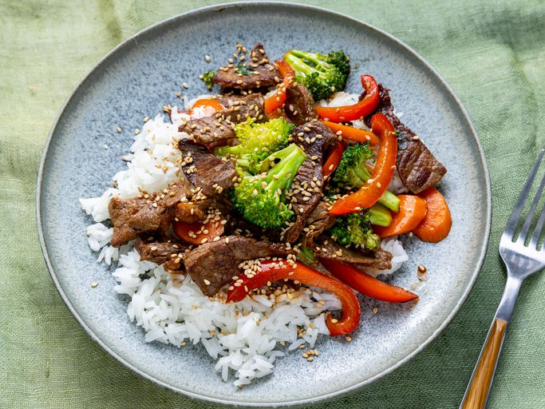
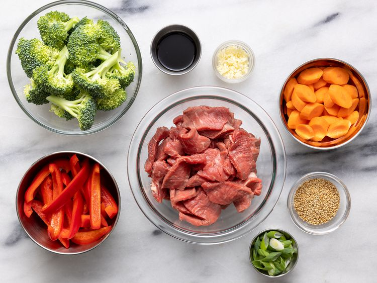
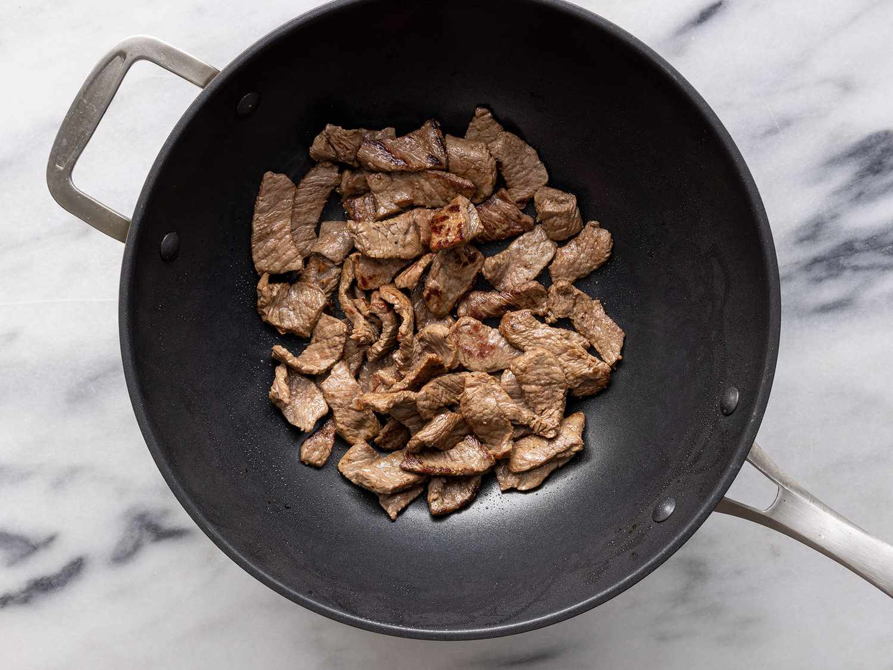
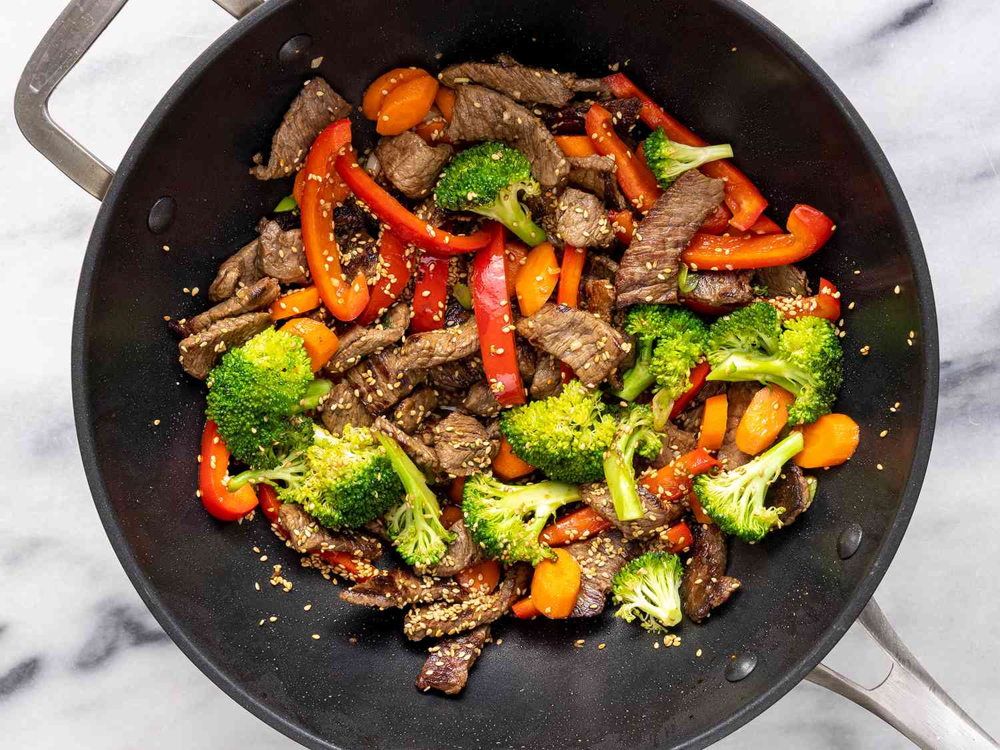

A quick beef stir-fry is a fast and flavorful dish that typically features thinly sliced beef cooked quickly in a hot pan or wok with vegetables and a savory sauce. It's a go-to meal when you're short on time but still want something satisfying and delicious.

Ingredients
2 tablespoons vegetable oil
1 pound or 454 grams sirloin, cut into 2-inch strips
1 1/2 cups fresh brocoli florets
1 red bell pepper, cut into matchsticks
2 carrots, thinly sliced
1 green onion, chopped
1 teaspoon minced garlic
2 tablespoons soy sauce
2 tablespoons sesame seeds, toasted
Directions

Gather all ingredients.

Heat vegetable oil in a large wok or skillet over medium-high heat; add beef and stir-fry until browned, 3 to 4 minutes.
Move beef to the side of the wok and add broccoli, bell pepper, carrots, green onion, and garlic to the center of the wok; stir-fry vegetables for 2 minutes.

Stir beef into vegetables and season with soy sauce and sesame seeds. Continue to cook and stir until vegetables are tender, about 2 more minutes.